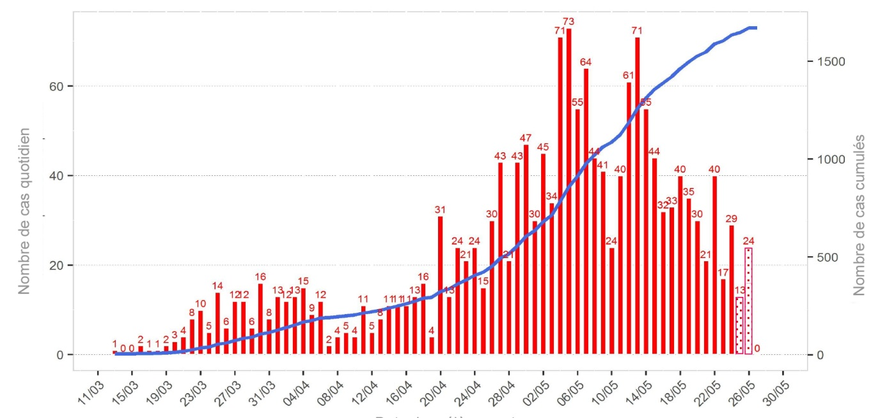

Le CoVID-19 dans l’Océan Indien : Mayotte en rouge, la Réunion en vert
Les deux départements français de l’Océan Indien se trouvent dans une situation complètement différente vis-à-vis du COVID-19.
1. Mayotte
Mayotte, 101ème département français, situé en zone tropicale, compte officiellement 270 000 habitants, mais cette population est doublée par un afflux incessant d’émigrés clandestins originaires surtout des Comores mais aussi de Madagascar et d’Afrique sub-saharienne. Ces émigrés vivent dans des habitations surpeuplées et sans eau courante, 30% des logements n’ayant pas de sanitaires. Une bonne partie de la population ne comprend pas le français (ou ne veut pas faire l’effort de le comprendre), ce qui rend les consultations difficiles en général et plus encore l’explication des circonstances exceptionnelles d’isolement et de gestes barrières. Ceci est d’autant plus complexe que le gouvernement comorien nie farouchement l’existence de ce virus, comme il a longtemps nié celle du VIH.
Deux cents tests par jour
Depuis fin décembre 2019, le coronavirus, parti de Chine, a vite conquis le monde entier (plus de 3,5 millions de cas et plus de 300 000 décès), mais les pays un peu isolés ont été épargnés pendant plusieurs semaines. Ainsi, les premiers cas ne sont apparus à Mayotte que début mars 2020 et le virus s’est vite répandu sur tout le territoire.
Ainsi, les deux laboratoires de Mayotte - le laboratoire central du centre hospitalier (Dr S. Olivier) et le laboratoire privé (Dr D. Troalen) - ont-ils effectué jusqu’à 200 tests de recherche du virus par jour. Le test était préconisé sur les symptômes cliniques, mais quand le diagnostic paraissait évident et dans les villages reculés, le test n’était pas réalisé, ce qui rend les résultats sous-estimés.
En principe, chaque cas dépisté positif, a fait l’objet d’une investigation téléphonique ou au domicile, par Santé publique France et l’ARS de Mayotte, quand cela a été possible, car les adresses étaient imprécises ou changeantes selon les jours.
Gestes barrières difficiles à faire comprendre
Par ailleurs, l’isolement des patients dépistés positifs est très difficile dans ce département d’outre-mer où la précarité socio-économique de la population rend la notion de maladie asymptomatique ou de risque de transmission virale très mal comprise.
Il en est de même concernant l’ensemble des pathologies (HTA, diabète, asthme, y compris la lèpre) où la population n’a pas intégré la notion de risques des ruptures thérapeutiques…, ce qui explique le nombre important de patients consultant pour état de mal asthmatique, un coma hypo ou hyperglycémique, un AVC, etc…). En outre, il est très difficile de contrôler les cérémonies religieuses et les mariages rassemblant plusieurs dizaines de personnes pendant plusieurs jours.
Le confinement est un peu respecté sur les quelques grands axes routiers, mais inexistant dans les petits chemins reliant les habitations. De ce fait, la circulation du virus se poursuit, expliquant le maintien de Mayotte en "rouge" (puis récemment en "orange") alors que le "vert" s’est étendu quasiment partout en métropole et dans les départements d’outre-mer au moment du déconfinement.
Selon les dernières mises au point de l’ARS de Mayotte, au 25 mai 2020, le virus circule toujours, (1669 cas au total) en particulier dans la ville de Mamoudzou et aux environs, en atteignant plus les hommes âgés (tableau I) mais le nombre de nouveaux cas commence à régresser ces trois dernières semaines (figure 1, tableau II).

| Cas confirmés | Hospitalisations | En réanimation | Décès | |
|---|---|---|---|---|
| Nombre | 1 669 | 290 | 34 | 21 |
| Age moyen | 37 ans | 51 ans | 57 ans | 64 ans |
| Sex ratio H/F | 0,9 | 1 | 1,8 | 2 |
| Date | 1 - 10 mai | 11 - 17 mai | 18 - 24 mai |
|---|---|---|---|
| Nouveaux cas | 387 | 317 | 228 |
| Positivité des tests | 34,2 % | 33,4 % | 29,1 % |
| Nombre de passages aux urgences | 255 | 217 | 182 |
| Taux de Covid aux urgences | 30,1 % | 27,2 % | 25,8 % |
| Symptômes cliniques | Contexte | ||
|---|---|---|---|
| Fièvre | 71,4 % | Diabète | 18,3 % |
| Céphalées | 70,3 % | Obésité | 14,4 % |
| Toux | 70,2 % | Hypertension artérielle | 13,9 % |
| Asthénie | 66,5 % | Pathologie respiratoire | 8,9 % |
| Myalgies | 58,2 % | Pathologie rénale | 4,6 % |
| Anosmie/agueusie | 40,2 % | Cardiopathie | 4,6 % |
| Dyspnée | 26,9 % | Grossesse | 4,4 % |
| Diarrhée | 17,0 % |
Tableau III. Symptômes et contexte du Coronavirus à Mayotte (SpF).
Par ailleurs, les services de santé ont été durement touchés, ce qui retentit sur l'offre de soins (Tableau IV).
| Profession | Nombre | ||
|---|---|---|---|
| Infirmiers | 29 | ||
| Aides-soignants | 26 | ||
| Médecins | 21 | ||
| Ambulanciers | 8 | ||
| Sages-femmes | 6 | ||
| Forces de l'ordre | 52 | ||
| Pompiers | 16 | ||
| Secteur de l'éducation | 40 |
| Cas admis en réanimation | Facteurs de risque | ||
|---|---|---|---|
| Nombre | 34 | Au moins un facteur | 88,2 % |
| Décès | 9 (26,5 % | Diabète | 41.2 % |
| Classe d'âge | 0-14 ans : 2,9 % | Obésité | 38,8 % |
| 15-44 ans : 26,5 % | Hypertension artérielle | 44,1 % | |
| 45-64 ans : 52,9 % | Cardiopathies | 11,8 % | |
| 65-74 ans : 14,7 % | Néphropathies | 14,7 % | |
| > 75 ans : 2.9 % | Hépatopathies | 5,9 % | |
| Syndrome respiratoire aigu |
80,6 % | Immunodéficience | 2,9 % |
| Grossesse | 2,9 % |